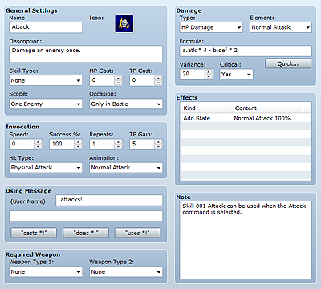

Skill data defines the actions that actors perform, including attacks and defense during combat and abilities (special attacks and magic). Defining a series of settings such as the conditions and occasions under which action is possible, the success rate, and the damage dealt to the target allows you to represent a variety of actions.

The name of the skill you are creating/editing. If the name you enter is too long, the entire string may not fit onscreen.
The icon that displays along with the skill name during the game. Double-clicking it displays the Icon window where you can specify an image. Generally, you should select an image that fits the skill's characteristics.
Descriptive text that appears when the player points the cursor at the skill on the game screen.
Specifies the type of skill. Initially, there are only two default settings (Special Attack and Magic), but you can set/change additional skill types on the Terms tab. All skill types except None can only be used by actors and classes that have been assigned the type in question using Add Skill Type.
The number of MP (0 to 9999) and TP (0 to 100) that are consumed when using the skill. The skill can only be used if the user's MP/TP equals or exceeds this value.
The target(s) affected when the skill is used. Specify one of the following:
The skill does not require you to specify an area-of-effect.
Affects one specific enemy.
Affects entire enemy troop.
Affects several randomly selected enemies (x is the number of targets).
Affects one specific ally.
Affects the entire ally group.
Affects several randomly selected allies (x is the number of targets).
Affects the user only.
Select the occasions when the skill can be used. Specify Always (always available during battle and on the menu), Only in battle (only available during battle), Only from the menu (only available on the menu), or Never.
The value (-2000 to 2000) added to the character's agility when using the skill. This affects attack order in battle and allows you to create skills that are powerful but take a long time to perform or skills that are weaker but can be quickly performed.
The rate (0 to 100%) at which the use of this skill succeeds. The actual success rate is affected by the skill's effectiveness against the target.
The number of times (1 to 9) the effect of a skill is applied to the target per use.
The number of TP that will be gained by successively performing the skill and having an effect on the target.
The method for determining a hit. Specify one of the following:
Treats a successful use of the skill as a hit. Counterattacks, magic reflection, and substitution are disabled.
Determines hits based on the user's hit rate and target's evasion rate. This method is subject to counterattacks and substitution.
Determines hits based on the target's magic evasion rate. This method is subject to magic reflection and substitution.
The animation displayed for the target when using the skill in battle.
A fixed phrase (up to two lines long) displayed as a message when using the skill in battle. Click the Cast x, Performed x, or Used x button to enter that fixed phrase.
The weapon that must be equipped as a condition for using the skill. Specify the weapon types in the two fields. Setting both to None means there is no weapon type that must be equipped to use the skill. Setting a weapon type for both means that at least one of the types of weapons that you set must be equipped to use the skill.
To have the skill deal damage to the target, specify the type of damage and the formula for calculating the amount of damage.
The effect type on HP/MP. Specify one of the six available types. Damage reduces HP/MP, Recover raises HP/MP, Drain transfers HP/MP from target to user (the amount drained will be subtracted from the target and added to the user).
The element applied to the effect.
The formula for calculating damage.
To directly enter a formula, use the character strings shown in the table below to specify parameters you want to look up. To look up the attacker's parameters, change "x" to "a", and to look up the target's parameters, change "x" to "b". The string "a.atk" looks up the attacker's ATK parameter. You can also use "v[n]" (n is a numeric value) to look up the value of the nth variable. You can use the four arithmetic operators (+, -, *, and /) in your formulas.
Entering "a.atk * 4 - b.def * 2" specifies that the damage dealt will be the value calculated by (attacker's ATK × 4) - (target's DEF × 2).
Note that you can also create a formula by clicking the Easy Create button. In the dialog box that appears, specify the basic value for the calculation in Base Value, the degree of effect (0 to 1000/100 is standard) the user's ATK and the target's DEF have in Physical, and the degree of effect (0 to 1000/100 is standard) the user's MAT and the target's MDF have in Magical, and then click the OK button.
The effects of elements and defense actions are reflected elsewhere, and are therefore not included in this formula.
| x.atk | Attack power |
|---|---|
| x.def | Defense power |
| x.mat | Magic attack |
| x.mdf | Magic defense |
| x.agi | Agility |
| x.agi | Agility |
| x.luk | Luck |
| x.mhp | Max HP |
| x.mmp | Max MP |
| x.hp | Current HP |
| x.mp | Current MP |
| x.tp | Current TP |
| x.level | Level |
The degree of variability (0 to 100%). The value of the calculated damage will vary by the percentage value you specify here. For example, if damage was calculated to be 100 and variance was set to 20, the final damage would be between 80 and 120 (100 ±20).
Specify whether to enable critical hits by selecting Yes or No. When you select Yes, critical hits will be determined based on the user's critical rate and the target's critical avoidance rate.
Effects other than damage. Double-clicking the field displays the Effects dialog box. See Setting Effects for more information.